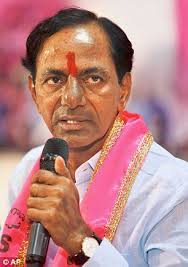
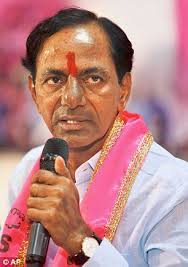
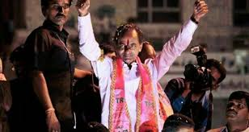
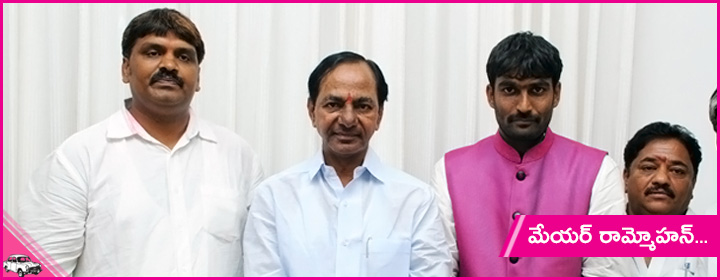
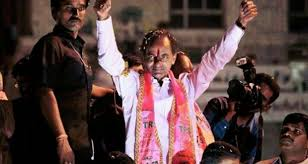
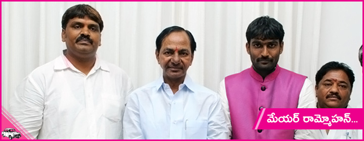

Telangana State Portal
 

 


Honb'le Ministers
Governer Narsimhan
Cheif Minister KCR
| CM RELIEF FUND DOnation |
|---|
| History |
| Language&Culture |
| Initiatives |
| News and press releases |
| Budget |
| Finances |
| Tenders |
| Government Orders |
| Webmail |
| Downloads |
Telanaga Profile
| Area of intrest | Description |
|---|---|
| Capital | Hyderabad |
| Districts | 10 |
District Websites
Mission Kakatiya
The Telangana Governments much-touted Mission Kakatiya programme Positive Results, which entails silt removal of existing water bodies to increase the water storage capacity is already showing positive results. This was evident based on a preliminary finding of a pilot study taken up by the University of Michigan (UoM), United States.